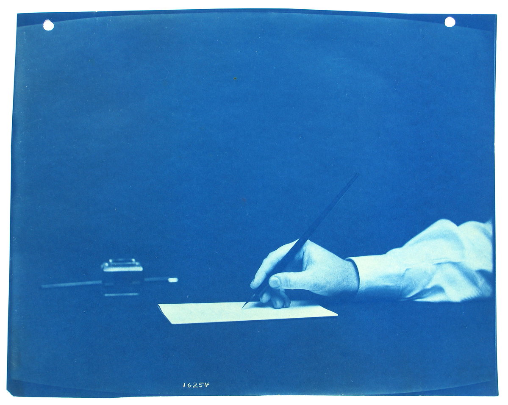

Letter 1 · To Mrs. Saville, England · St. Petersburgh, Dec. 11th
I arrived here yesterday, and my first task is to assure my dear sister of my welfare and increasing confidence in the success of my undertaking.
Benjamin Patersen, Nevsky Prospect, 1799 · Hand writing a letter, cyanotype, c. 1890s · Patersen, Senate Square, 1799